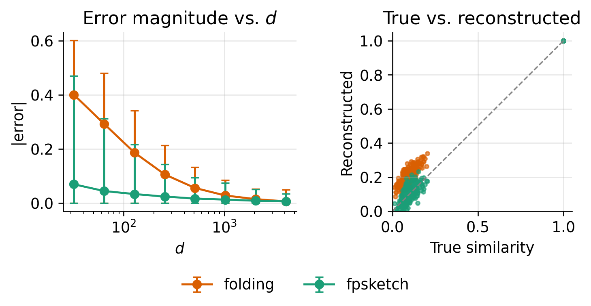
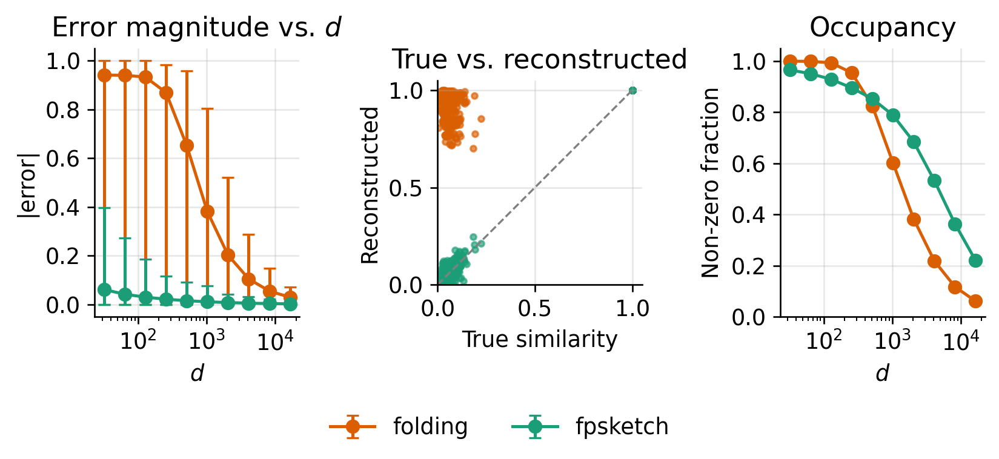
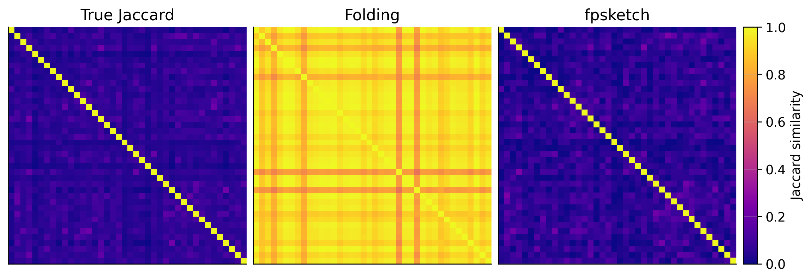

fpsketch: a better fingerprint compression algorithm
machine learning
drug discovery
chemistry
_recent-highlight
Blog post introducing fpsketch library to compress fingerprints better than folding.
Author
Austin Tripp
Published
August 31, 2026
☀️ High confidence🤖 AI-assisted💎 High effort💡 High originality🌱 New
During a discussion1 with Claude, it raised the idea of using sketching (random linear projections) to compress molecular fingerprints. After thinking this over a bit, I think it’s actually an amazing idea. This weekend I prototyped the idea in a new Python package fpsketch, and it seems very effective! I think this might be a strict improvement over the default of “folding” fingerprints. I’m excited to try it out and would love for others to try too.
fpsketchis on PyPI: if you work in cheminformatics, please try it out!
ImportantCollaboration opportunity (2026-08-31)
I would love to test this idea with other people: testing fpsketch features as inputs to machine learning models, improving the sketches, and exploring semi-learned fingerprints. More in Section 4.
If you are interested, please reach out by email!
1 Overview of fpsketch (less technical)
Molecular fingerprints are collections of substructures in a molecule (e.g. subgraphs, functional groups). Molecules can have a lot of substructures: too many to realistically give each possible substructure its own dedicated dimension. Therefore, people typically compress fingerprints to a smaller dimension d.
Here’s an analogy of how this compression normally works (using the folding method, the default in packages like rdkit): each substructure gets a “dart” and throws it (pseudo-)randomly at a fixed size dart board. The resulting fingerprint is either a collection of which slots on the board are occupied (binary fingerprints) or how many darts are in each slot (count fingerprints). As you can imagine, the end result is often that there are darts everywhere and it’s hard to distinguish between each molecule’s filled board. As a result, practitioners compensate by using larger dart boards (larger d) or by giving each molecule fewer darts (using fingerprints that capture fewer substructures).
fpsketch uses a different mechanism. In the dart analogy, whenever a dart hits a slot that already has a dart, we (pseudo-)randomly flip a coin to choose between adding the new dart (the same as folding) or removing both the new dart and one of the existing darts in that slot. Essentially, each dart has an equal chance of adding to a slot and knocking an existing dart out of a slot. This procedure leaves the dart board far emptier at the end, and still produces a fairly unique fingerprint that depends on all the darts. The only disadvantage is that an empty slot no longer implies that no dart ever hit that slot (i.e. you can’t use the fingerprint for a reverse substructure search). However, when fingerprints are used as inputs to machine learning models rather than for retrieval, this is arguably not relevant anyway.
2 Technical overview of fpsketch
2.1 CountSketch
The dart analogy is essentially a description of CountSketch (Charikar et al. 2002). To reduce from dimension D to dimension d, CountSketch forms a d\times D matrix A with entries
A_{ij} = \sigma(j) \mathbb I \left[h(j) = i \right] \ .
\mathbb I is the indicator function, while \sigma and h are two hash functions with different output spaces:
\sigma: \{1, \ldots, D\} \mapsto \{-1, +1\}
h: \{1, \ldots, D\} \mapsto \{1, \ldots, d\}
CountSketch is very closely related to standard “folding” of fingerprints: if we set \sigma(\cdot) = 1 to be a constant function, it is actually exactly folding. However, the fact that \sigma can be negative gives CountSketch a very appealing property: if the hash functions \sigma, h are chosen randomly from suitable2 distributions, then A will on average preserve inner products. This means for any vectors x,y\in\mathbb R^D
where A inside the expectation is formed using the randomly drawn hash functions (\sigma,h). Since inner products are preserved on average, this means any similarity metric computed with inner products (like dot-product Tanimoto similarity defined below in Equation 2) won’t be systematically inflated (a common side-effect of folding).
2.2 Unary encoding of count fingerprints
Count fingerprints tend to perform better in most practical applications than binary ones.3 Count fingerprints are normally compared with the Jaccard (aka “minmax”) similarity metric
Unfortunately, there is no guarantee that a mapping preserving inner products will preserve J. However, there is a way around this: unary encoding, which converts a count fingerprint to an even higher dimensional binary fingerprint (explained in Note 1, hidden by default). This allows us to use an alternative formula for J which is only valid for binary fingerprints and relies on inner products:
J_{\text{bin}}(x, y) = \frac{
x \cdot y
}{
\|x\|^2 + \|y\|^2 - x\cdot y
} \ .
\tag{2}
Note 1: Unary encoding explained
The easiest way to think of unary encoding is as a matrix. If x is a count fingerprint where x_i is the count of substructure i, replace it with a matrix X where X_{ij} = 1 if and only if x_i \geq j. j spans all of \mathbb N = \{1, 2, \ldots\}, although any vector with bounded counts will of course only have a finite number of entries. Since integer tuples can be mapped bijectively to integers, it is possible to flatten X into a 1D vector, although we won’t actually do it here.
2.3 fpsketch
fpsketch applies a CountSketch to a unary encoding of an input fingerprint x (doing both the sketch and the unary encoding internally). Because CountSketch’s matrix A is sparse, we never actually need to form the matrix A (important because it would require terabytes of memory). Instead, we iterate over the non-zero entries of the fingerprints, hash them with h and \sigma, then increment the appropriate entry of the compressed fingerprint. This makes it incredibly fast (even faster because I implemented vectorized hashing with Claude’s help).
To reduce the likelihood of getting a “bad seed” (a pick of \sigma,h that happens to do poorly for your specific input fingerprints), by default fpsketch divides the d dimensions into m blocks and performs m independent CountSketches with different hash functions, each writing to a smaller (d/m)-dimensional output.4 This doesn’t affect the variance of the inner products, but does reduce the higher-order moments (e.g. kurtosis). We set m to 4 by default.
The source code for the repo is here, and the code for the hashing is here5 if you are interested.
3 Demonstration
I’ll demonstrate fpsketch on some drug-like molecules from ZINC. You can follow along by installing:
pip install "fpsketch[chem]" numpy matplotlib
We’ll start by loading the molecules:
from pprint import pprintimport numpy as npimport matplotlib.pyplot as pltfrom rdkit import Chemfrom rdkit.Chem import rdFingerprintGeneratorfrom fpsketch import encode_sparse, encode_molswithopen("./ZINC-100.smiles") as f: smiles = [line.strip() for line in f.readlines()]print(f"{len(smiles)} SMILES loaded. First few:")pprint(smiles[:5])# Convert to rdkit molsmols = [Chem.MolFromSmiles(s) for s in smiles]
100 SMILES loaded. First few:
['O=C(c1ccccc1[N+](=O)[O-])c1nc2ccccc2n1-c1ccccc1',
'COc1ccc(SCCC(=O)N2CCC[C@@H]2C)cc1OC',
'O=C(CC1(O)CCCCC1)NNc1cccc(C(F)(F)F)n1',
'C[C@@H]1CCC[C@@H](CNC(=O)c2ccc(C(=O)N(C)C)cc2)C1',
'C=C1C(=O)O[C@@H]2[C@H]1[C@H](O)C[C@]1(C)[C@@H](O)CC[C@H](C=O)[C@@H]21']
Code: set a consistent plot style and per-method colors (boilerplate, hidden by default)
# Colorblind-friendly palette (ColorBrewer "Dark2"), used consistently for# each method throughout the post.METHOD_COLORS = {"folding": "#d95f02","sort & slice": "#7570b3","fpsketch": "#1b9e77",}plt.rcParams.update({"figure.dpi": 120,"font.size": 11,"axes.spines.top": False,"axes.spines.right": False,"axes.grid": True,"grid.alpha": 0.3,"legend.frameon": False,})
Code: helper functions: folding, Jaccard/Tanimoto similarity (hidden by default)
def fold_fingerprint_dict(fp: dict[int, int], dim: int) ->dict[int, int]: out =dict()for feature, count in fp.items(): folded_feature = feature % dim out[folded_feature] = out.get(folded_feature, 0) + countreturn outdef jaccard_sim(fp1: dict[int, int], fp2: dict[int, int]) ->float: all_keys =set(fp1.keys()) |set(fp2.keys()) feature_pairs = [(fp1.get(k, 0), fp2.get(k, 0)) for k in all_keys]return (sum(min(pair) for pair in feature_pairs) /sum(max(pair) for pair in feature_pairs) )def jaccard_sim_matrix(fps1: list[dict[int, int]], fps2: list[dict[int, int]]) -> np.ndarray: out = np.zeros((len(fps1), len(fps2)))for i, fp1 inenumerate(fps1):for j, fp2 inenumerate(fps2): out[i, j] = jaccard_sim(fp1, fp2)return outdef dot_product_tanimoto(x1: np.ndarray, x2: np.ndarray) -> np.ndarray: dot = x1 @ x2.T eps =1e-12 norm1 = (x1 **2).sum(axis=-1, keepdims=True) norm2 = (x2 **2).sum(axis=-1, keepdims=True)return (dot + eps) / (norm1 + norm2.T - dot + eps)def compute_error_stats(estimated: np.ndarray, true: np.ndarray) ->dict:"""Summary stats of |estimated - true|: mean (MAE), median, min, and max.""" abs_err = np.abs(estimated - true)returndict( mae=abs_err.mean(), median=np.median(abs_err),min=abs_err.min(),max=abs_err.max(), )
3.1 Basic use
At its simplest, fpsketch is a 1-line encoding:
z = encode_mols(mols, dim=256)print("Shape: ", z.shape)print(z)
# Your own dictsfp_dicts = [ custom_morgan_generator.GetSparseCountFingerprint(mol).GetNonzeroElements()for mol in mols]# ... customize features however you want# (without customization it is identical to encode_mols above)z = encode_sparse(fp_dicts, dim=256)print("Shape: ", z.shape)print(z)
Let’s reconstruct the Tanimoto similarity matrix between our radius 6 fingerprints for various sizes d, comparing fpsketch and folding. Code below:
true_jaccard_sims = jaccard_sim_matrix(fp_dicts, fp_dicts)d_to_res =dict()d_arr = [32, 64, 128, 256, 512, 1024, 2048, 4096]for d in d_arr:# Folded baseline fps_folded = [fold_fingerprint_dict(fp, d) for fp in fp_dicts] folded_jaccard_sims = jaccard_sim_matrix(fps_folded, fps_folded)# fpsketch z = encode_sparse(fp_dicts, dim=d) fpsketch_sims = dot_product_tanimoto(z, z)# Get errors d_to_res[d] =dict()for method, arr in [("folding", folded_jaccard_sims), ("fpsketch", fpsketch_sims)]: d_to_res[d][method] = (arr, compute_error_stats(arr, true_jaccard_sims))
Code: plot error-magnitude range and true-vs-reconstructed similarity (boilerplate, hidden by default).
fig, axes = plt.subplots(1, 2, figsize=(6.4, 3.2))# Median error magnitude, with min/max rangeax = axes[0]for method in ["folding", "fpsketch"]: medians = np.array([d_to_res[d][method][1]["median"] for d in d_arr]) mins = np.array([d_to_res[d][method][1]["min"] for d in d_arr]) maxs = np.array([d_to_res[d][method][1]["max"] for d in d_arr]) ax.errorbar( d_arr, medians, yerr=[medians - mins, maxs - medians], marker="o", capsize=3, color=METHOD_COLORS[method], label=method, )ax.set_xscale("log")ax.set_xlabel("$d$")ax.set_ylabel("|error|")ax.set_title("Error magnitude vs. $d$")# True vs. reconstructed similarity, top 25x25 submatrixd_scatter =256n_scatter =25ax = axes[1]ax.plot([0, 1], [0, 1], color="gray", linestyle="--", linewidth=1)true_sub = true_jaccard_sims[:n_scatter, :n_scatter].ravel()for method in ["folding", "fpsketch"]: pred_sub = d_to_res[d_scatter][method][0][:n_scatter, :n_scatter].ravel() ax.scatter( true_sub, pred_sub, s=8, alpha=0.4, color=METHOD_COLORS[method], label=method, )ax.set_xlim(0, 1.05)ax.set_ylim(0, 1.05)ax.set_aspect("equal")ax.set_xlabel("True similarity")ax.set_ylabel("Reconstructed")ax.set_title("True vs. reconstructed")fig.tight_layout(rect=[0, 0.1, 1, 1])handles, labels = axes[0].get_legend_handles_labels()fig.legend(handles, labels, loc="lower center", ncol=2, frameon=False)plt.show()

Figure 1: Accuracy of reconstructed Tanimoto similarity vs. output dimension d: median error magnitude with min/max range (left), and true vs. reconstructed similarity for the top 25 molecules at d=256 (right).
Figure 1 shows the results. At low d, fpsketch preserves Tanimoto similarities substantially better than folding. At d=32 (absolutely tiny by fingerprint standards), fpsketch has a median error of only ~0.1, compared to ~0.4 for folding. As d increases, the error profiles become similar. The rightmost figure shows that the errors are mostly caused by folding overestimating similarity, while fpsketch has a mix of overestimation and underestimation.
3.3 Enabling giant fingerprints
CountSketch is unbiased, regardless of the size (or sparsity) of the input dimension. This enables fingerprints with many features to be used with small output dimensions d. To show this, we will construct giant binary fingerprints combining Morgan fingerprints of radius 10 (basically including the whole molecule), Atom Pair fingerprints, and the classic RDKit (topological/Daylight-style) fingerprint, to make the fingerprint even richer. The standard binary version of folding would map these to low dimension and then binarize them. Because so many substructures are captured, we expect the fingerprints to be mostly 1s, causing them all to be very similar to each other and therefore catastrophically fail at differentiating molecules. On the other hand, fpsketch should give a reasonable (but definitely imperfect) encoding (which will not be binary). Here is the code to construct these fingerprints:
# Form giant fingerprints (count for now, we will binarize)gen_morgan10 = rdFingerprintGenerator.GetMorganGenerator(radius=10)gen_atom_pair = rdFingerprintGenerator.GetAtomPairGenerator()gen_rdkit = rdFingerprintGenerator.GetRDKitFPGenerator()giant_fp_dicts = []for mol in mols: fp = gen_morgan10.GetSparseCountFingerprint(mol).GetNonzeroElements() fp.update(gen_atom_pair.GetSparseCountFingerprint(mol).GetNonzeroElements()) fp.update(gen_rdkit.GetSparseCountFingerprint(mol).GetNonzeroElements()) giant_fp_dicts.append({k: 1for k in fp}) # binarizen_unique =len(set().union(*[fp.keys() for fp in giant_fp_dicts]))print("Mean substructures per molecule: "f"{np.mean([len(fp) for fp in giant_fp_dicts]):.1f}")print(f"Unique substructures across the sample: {n_unique}")
Mean substructures per molecule: 1119.1
Unique substructures across the sample: 50631
Notice we have over 1000 unique substructures per molecule on average. This means that if d<1000 the fingerprints should be (mostly) saturated. We now use fpsketch and folding to reduce the dimension and compare.
Code: compute reconstruction error and output occupancy across dimensions (code hidden because it is nearly identical to code from the previous subsection).
true_giant_jaccard_sims = jaccard_sim_matrix(giant_fp_dicts, giant_fp_dicts)giant_d_arr = [2**i for i inrange(5, 15)]giant_d_to_res =dict()occupancy = {"folding": [], "fpsketch": []}for d in giant_d_arr:# Folded baseline (re-binarize after folding: binary folding is an OR of# colliding bits, not a sum of them) fps_folded = [ {k: 1for k in fold_fingerprint_dict(fp, d)} for fp in giant_fp_dicts ] folded_jaccard_sims = jaccard_sim_matrix(fps_folded, fps_folded)# fpsketch z = encode_sparse(giant_fp_dicts, dim=d) fpsketch_sims = dot_product_tanimoto(z, z)# Get errors giant_d_to_res[d] =dict()for method, arr in [("folding", folded_jaccard_sims), ("fpsketch", fpsketch_sims)]: giant_d_to_res[d][method] = (arr, compute_error_stats(arr, true_giant_jaccard_sims))# Fraction of output dimensions that are non-zero, on average occupancy["folding"].append(np.mean([len(fp) / d for fp in fps_folded])) occupancy["fpsketch"].append(np.mean(z !=0))
Plot error-magnitude range, true-vs-reconstructed similarity, and occupancy
d_example =256fig, axes = plt.subplots(1, 3, figsize=(7, 3.2))# Median error magnitude, with min/max rangeax = axes[0]for method in ["folding", "fpsketch"]: medians = np.array([giant_d_to_res[d][method][1]["median"] for d in giant_d_arr]) mins = np.array([giant_d_to_res[d][method][1]["min"] for d in giant_d_arr]) maxs = np.array([giant_d_to_res[d][method][1]["max"] for d in giant_d_arr]) ax.errorbar( giant_d_arr, medians, yerr=[medians - mins, maxs - medians], marker="o", capsize=3, color=METHOD_COLORS[method], label=method, )ax.set_xscale("log")ax.set_xlabel("$d$")ax.set_ylabel("|error|")ax.set_title("Error magnitude vs. $d$")# True vs. reconstructed similarity, top 25x25 submatrixn_scatter =25ax = axes[1]ax.plot([0, 1], [0, 1], color="gray", linestyle="--", linewidth=1)true_sub = true_giant_jaccard_sims[:n_scatter, :n_scatter].ravel()for method in ["folding", "fpsketch"]: pred_sub = giant_d_to_res[d_example][method][0][:n_scatter, :n_scatter].ravel() ax.scatter( true_sub, pred_sub, s=8, alpha=0.4, color=METHOD_COLORS[method], label=method, )ax.set_xlim(0, 1.05)ax.set_ylim(0, 1.05)ax.set_aspect("equal")ax.set_xlabel("True similarity")ax.set_ylabel("Reconstructed")ax.set_title("True vs. reconstructed")# Occupancyax = axes[2]for method in ["folding", "fpsketch"]: ax.semilogx( giant_d_arr, occupancy[method], marker="o", color=METHOD_COLORS[method], label=method, )ax.set_xlabel("$d$")ax.set_ylabel("Non-zero fraction")ax.set_ylim(0, 1.05)ax.set_title("Occupancy")fig.tight_layout(rect=[0, 0.1, 1, 1], w_pad=2.0)handles, labels = axes[0].get_legend_handles_labels()fig.legend(handles, labels, loc="lower center", ncol=2, frameon=False)plt.show()

Figure 2: Accuracy of reconstructed Tanimoto similarity vs. output dimension d for the giant fingerprint: median error magnitude with min/max range (left), true vs. reconstructed similarity for the top 25 molecules at d=256 (middle), and output occupancy (right).
Figure 2 shows the results. The difference is even more dramatic than Figure 1 (as expected). At low d, the median error is close to 1 for folding, compared to ~0.1 for fpsketch. At high d, the difference narrows, although fpsketch is still significantly better than folding even for d\approx 10^4. The middle and right subfigures suggest that the effect is driven by the high occupancy rates of folded fingerprints causing significant overestimation of similarities, although occupancy alone is clearly not the whole story, since fpsketch’s fingerprints also have high occupancy (in fact higher occupancy for high d). However, since fpsketch’s entries are both positive and negative, high occupancy does not directly translate into high similarity: some negative and positive entries cancel in the dot products.
Figure 3 visualizes the differences between the reconstructed matrices at d=256, highlighting fpsketch’s improvements.
Plot similarity matrix heatmaps at d=256
n_show =40# subset of molecules, for a readable heatmapmats = [ ("True Jaccard", true_giant_jaccard_sims), ("Folding", giant_d_to_res[d_example]["folding"][0]), ("fpsketch", giant_d_to_res[d_example]["fpsketch"][0]),]fig = plt.figure(figsize=(9.5, 3.4), constrained_layout=True)gs = fig.add_gridspec(1, 4, width_ratios=[1, 1, 1, 0.06])axes = [fig.add_subplot(gs[i]) for i inrange(3)]cax = fig.add_subplot(gs[3])for ax, (title, mat) inzip(axes, mats): im = ax.imshow(mat[:n_show, :n_show], vmin=0, vmax=1, cmap="plasma") ax.set_title(title) ax.set_xticks([]) ax.set_yticks([])cbar = fig.colorbar(im, cax=cax, label="Jaccard similarity")# The colorbar's own column keeps the heatmaps at equal size, but (being a# plain axes, not an equal-aspect image) it doesn't shrink to match their# height on its own -- force a layout pass, then align it to match exactly.fig.canvas.draw()img_pos = axes[-1].get_position()cax_pos = cax.get_position()fig.set_layout_engine(None)cax.set_position([cax_pos.x0, img_pos.y0, cax_pos.width, img_pos.height])plt.show()

Figure 3: Reconstructed similarity matrices at d=256 for a subset of molecules: true Jaccard similarity, folding, and fpsketch (shared color scale).
4 Conclusion
I’m convinced that fpsketch is essentially a strict improvement over folding, at least for the purposes of similarity calculation.
After trying this and seeing it work so well, I’m honestly surprised this hasn’t been tried earlier (at least I couldn’t find evidence of anybody using CountSketch for fingerprints). CountSketch is a 20-year-old algorithm after all. After thinking about it, my best guess is that the field is still mentally stuck with the model of binary fingerprints, and uses compression methods (like folding) which also work with binary fingerprints. CountSketch outputs a mix of positive and negative entries in its compressed vectors, so it requires a floating point representation. It’s only fairly recently that people use floating-point fingerprints as inputs to machine learning models, so perhaps it never occurred to anybody that this enables compression algorithms which use more of this floating-point range.
There are three follow-up directions I’m excited about:
Trying fpsketch in machine learning models: I expect it to work better, especially for methods like kNN and GP which only use comparisons between fingerprints (and so matching similarity scores exactly is a sufficient condition to match the performance of sparse fingerprints).
For neural networks, I am less confident, but still optimistic that it will improve performance. Deep learning embeddings of molecules are likely already non-linear mixtures of graph features. fpsketch’s fingerprints have the advantage of being low-dimensional and potentially using a richer set of features, which I suspect are the main things that give deep learning embeddings an edge over fingerprints in property prediction tasks (although they don’t always seem to have an edge).
Learnable fingerprints: because fpsketch is a linear map, it is differentiable. This could allow, for example, a weight to be learned for each input subgraph, allowing a model to adaptively learn which features to pay attention to more than others. I think this would be an interesting (and interpretable) way of making fingerprints a bit more like deep learning embeddings, which allow the model to learn which substructures to pay attention to.
fpsketch is written in numpy and assumes that inputs are all integers, but it wouldn’t be too difficult to rewrite it in torch or jax to allow for autodiff.
Other sketches: is the default of 4 CountSketches optimal? Is it worth exploring other sketching techniques like SRHT? I’m not familiar enough with sketches to pick one optimally (I chose CountSketch after discussing options with Claude and being persuaded by the O(\mathrm{nnz}) runtime mostly). Since fpsketch is more likely to be combined with Tanimoto similarity rather than a plain dot product, does that change which sketch is optimal?
These are all theory questions beyond my expertise. I’d love for a more theory-oriented person to take a look at this!
I would love to have help answering these questions. If you’re interested in working together, please reach out!6
References
Charikar, Moses, Kevin Chen, and Martin Farach-Colton. 2002. “Finding Frequent Items in Data Streams.”International Colloquium on Automata, Languages, and Programming, 693–703.
Huber, Florian, and Julian Pollmann. 2026. “Count Your Bits: Fingerprint Benchmarking to Assess Broad Chemical Space Representation.”Journal of Cheminformatics 18 (1): 83.
Earlier this summer I read a good paper which extensively studied the performance of various molecular fingerprints (Huber and Pollmann 2026). One of their conclusions was that log-scaling of count fingerprints was often beneficial. This reminded me of an experiment I did in one of my PhD papers (Tripp et al., n.d.) where I tried square root scaling of fingerprint counts. I decided to prompt Claude to study this question autonomously. After some iteration it looks like square root scaling was indeed effective, but without prompting it proposed CountSketch as a baseline and noted it worked well. I followed up on the idea, leading to this post.
It also produced an interesting result on square root scaling, although I think it is overall less effective than fpsketch, so it will need to wait for a future post.↩︎
The details of this are beyond this post and exceed my understanding of CountSketch.↩︎
See for example Huber and Pollmann (2026) who recently concluded this in a systematic study.↩︎
If d/m is not an integer, the last sketch gets the leftover dimensions.↩︎
Note this is a permalink to a specific commit for the first release version; this code may change in the future.↩︎
Admittedly, this would probably just be light advising from me — my day job at Valence/Recursion keeps me pretty busy.↩︎
Citation
BibTeX citation:
@online{tripp2026,
author = {Tripp, Austin},
title = {Fpsketch: A Better Fingerprint Compression Algorithm},
date = {2026-08-31},
url = {https://austintripp.ca/blog/2026-08-31-fpsketch/},
langid = {en}
}